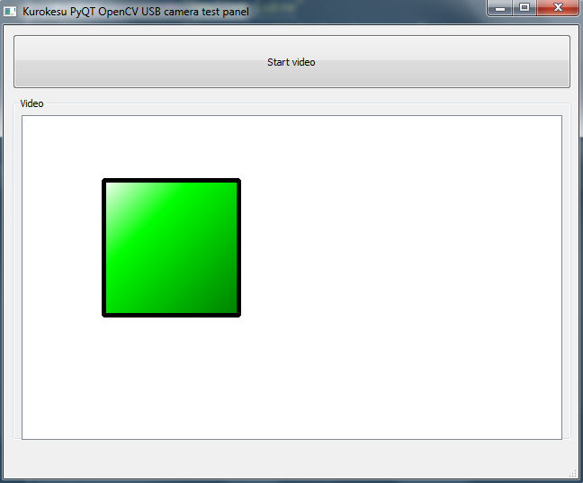
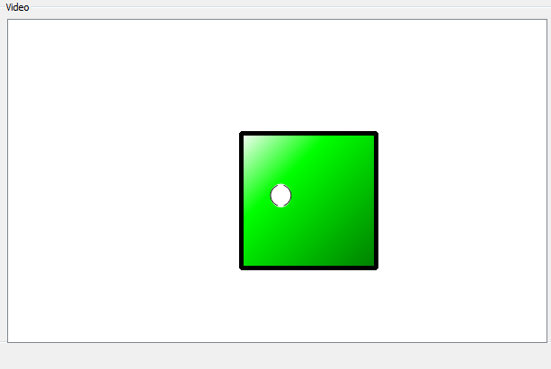
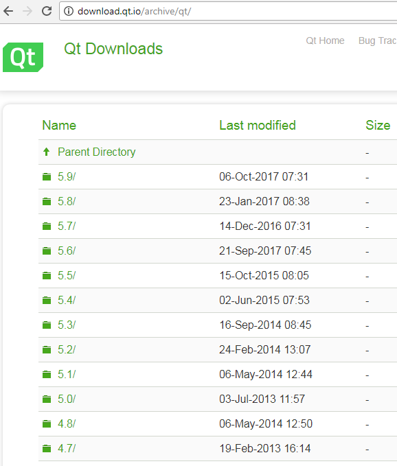
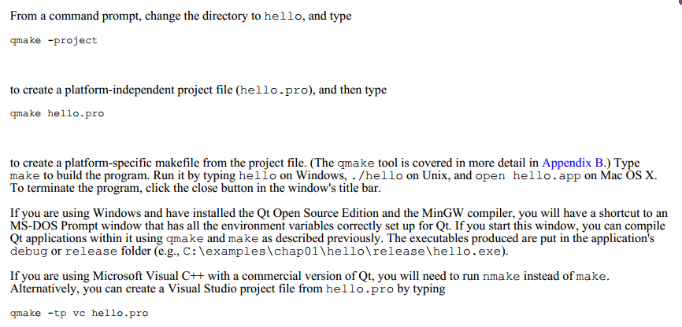
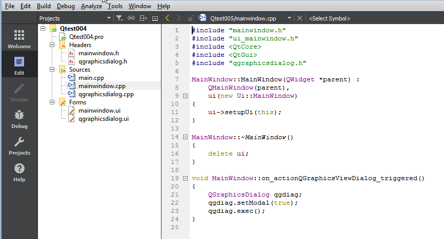
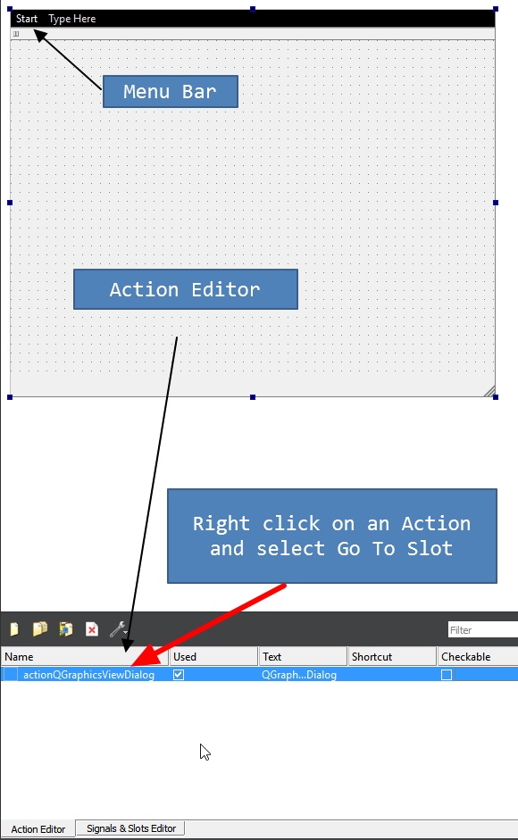
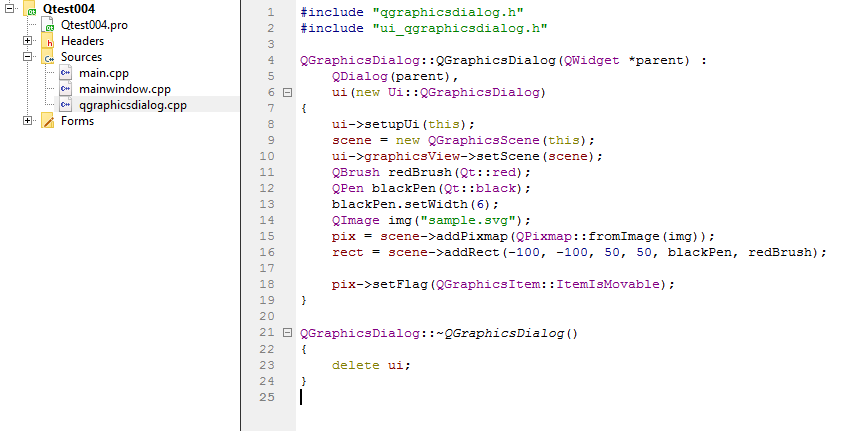

PyQt4
PyQt4
This document is raised from PyQt GUI programming for an OpenCV application where I wanted to manipulate the captured image for ratio measurement. Qt itself is a large and very featurefull library. Primarily programmed by C++ for multiple platforms. In windows it has tools to be worked with MinGW in QtCreator. But Still facing problem in QtCreator C++ dependencis. Could not create indipendent apps. But created PyQt projects as well. I will discuss overall Qt C++ and PyQt sample projects with some GUI features.
A good collection of QT C++ tutorial video has been provided by
C++ Qt 81 - QGraphicsView and QGraphicsScene
shows how to use QGraphicsView and QGraphicsScene in C++ Qt. But things are not seems easier in C++ right now, Hence I have few complete apps written in PyQt. So I would prefer to convert the concept to PyQt. But Object orientation are not same in PyQt. Thats why I had to serach web for documents on how to use various graphics objects.
The concept of QGraphicsView and QGraphicsScene is that QGraphicsView attaches a QGraphicsScene instance, this scene has a array or list called Items. It accepts QGraphicsItem instances as additions. There are QtGui.QGraphicsTextItem, QGraphicsPixmapItem, QGraphicsRectItem etc, Coder can also create custom items. This video tutorial C++ Qt 82 - Custom QGraphicsItem shows how to make Custom QGraphicsItem. In the following example I used an RectItem
from PyQt4 import QtCore, QtGui, uic
import sys
.....................
.....................
.....................
class MyWindowClass(QtGui.QMainWindow, form_class):
def __init__(self, parent=None):
QtGui.QMainWindow.__init__(self, parent)
self.setupUi(self)
self.startButton.clicked.connect(self.start_clicked)
self.scene = QtGui.QGraphicsScene()
self.graphicsView.setScene(self.scene)
self.linearGradient = QtGui.QLinearGradient(-100, -100, 150, 150)
self.linearGradient.setColorAt(0.0, QtCore.Qt.white)
self.linearGradient.setColorAt(0.2, QtCore.Qt.green)
self.linearGradient.setColorAt(1.0, QtCore.Qt.black)
self.rect = self.scene.addRect(-100, -100, 150, 150, QtGui.QPen(QtCore.Qt.black, 5), QtGui.QBrush(self.linearGradient))
self.rect.setFlag(QtGui.QGraphicsItem.ItemIsMovable)

Observe how I used linearGradient color effect and ItemIsMovable flag. Again adding following code will also add external image to the scene.
self.pix = QtGui.QPixmap.fromImage(QtGui.QImage('sample.svg'))
self.pixmap = self.scene.addPixmap(self.pix)
self.pixmap.setFlag(QtGui.QGraphicsItem.ItemIsMovable)

here we added a svg file only to the scene. Other image files are also supported.

There is a good collection of PyQt examples in Werkov Github place. So many examples and also nullege.com is a remarkable python code search engine. Such as http://nullege.com/codes/search/PyQt4.QtGui.QPen
QT C++
After some search I found a blog post that says to copy some dll files from QT bin folder and MinGW bin folder as follows:
Copy these files to the Qt project exe folder. Then the exe should run properly.
Older Versions of Qt SDK + MinGW
To experiment I downloaded an older version of QT from http://download.qt.io/archive/qt/ . All older versions are available here including Embedded Linux Version and source codes. I downloaded Windows 32Bit MinGW version 
It gives an installer for windows. You must install the
MinGW libstdc++6.dll file conflict with Qt's libstdc++6.dll
I think there is a version conflict between the libraries of MinGW and Qt-4.8.6 . This is because I installed a latest version of MinGW where Qt version is 4.8.6 . I copied all the dll files to the Qt project release directory where the exe file is generated. It shows entry point error in 
Open Sample Dialog QAction Menu Operations
In this small app I am trying to open a sample dialog with or without Modal property, later I will add QGraphicsView object / instance to the dialog.
Observe the video
Go To Slot. Then select a proper slot ( triggered ) will add this slot function to the related .cpp file.
As this example creates
void MainWindow::on_actionQGraphicsViewDialog_triggered() slot function. Then I add a dialog and show the dialog in this slot function as follows:As I already created
QGraphicsDialog form to work with the code. Then I added a QGraphicsView element object to the dialog and implemented QGraphicsScene to draw various graphics to the Graphics View. The scene implementation is done in the 
Here I added Brush, Pen and QImage. Load a pixmap from a QImage file. Note that
pix and rect are declared in the class constructor to be alive as long as the instance exist.